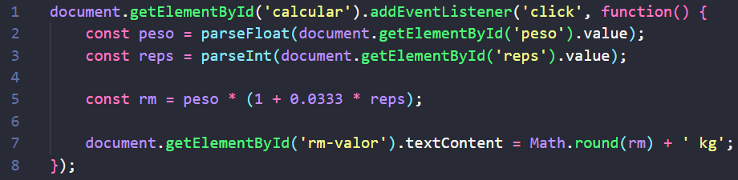

Sobre o site
- Autor
- Pietro Cunha - Entusiasta de musculação
- Colaboradores
- Professor Daniel Hasan - Orientação pedagógica
- Créditos
- Imagens de atletas obtidas de fontes públicas com permissão para uso educacional
- Conteúdo baseado em pesquisas científicas da área de Educação Física
- Ícones por Font Awesome e Flat Icon
Itens extras
- (3-10%) Criar algo interativo na página usando JavaScript
- JavaScript foi utilizado para o funcionamento da calculadora 1RM: 
- (5-10%) Colocar animações, transições e transformações
- Todos os botões do site apresentam transições e transformações ao passar o cursor.
- (2-5%) Easter eggs usando CSS ou JavaScript
- Há um pequeno efeito com CSS ao passar o cursor do mouse por cima da logo do site.
- (5%) Alguns elementos com posicionamento não estático
- O botão de voltar para o topo da página no canto inferior direito tem posicionamento fixo.